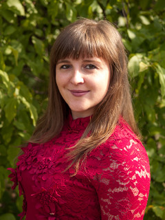

Сайт педагога-организатора
Пугиной Ксении Романовны
Немного обо мне

Должность: Педагог - организатор Общий стаж: 3 Стаж работы по специальности: 3 Образовательное учреждение: - Уровень образования: высшее образование Ученая степень: отсутствует Ученое звание: отсутствует Направление подготовки и (или) специальности педагогического работника: - Квалификация: Молодой специалист Дата получения квалификации: 3.09.2018 Данные о повышении квалификации или (и) профессиональной переподготовке: 1. Региональные аспекты реализации персонифицированного дополнительного образования детей 2019, ГАУ ДПО ЯО ИРО Преподаваемые педагогическим работником дисциплины: Проектная деятельность